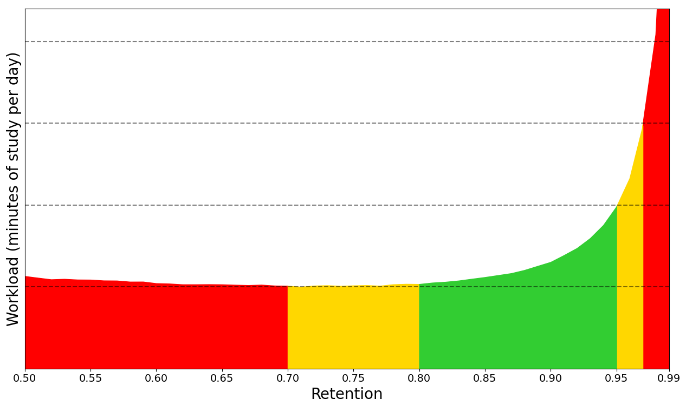

Deck Options
- Presets
- Subdecks
- Daily Limits
- New Cards
- Lapses
- Display Order
- Burying
- Audio
- Timer
- Auto Advance
- FSRS
- Advanced
Deck options primarily control the way Anki schedules cards. It is recommended that you spend a few weeks with the defaults to get a feel for how Anki works before you start adjusting the options. Please make sure you understand the options before changing them, as mistakes can reduce Anki's effectiveness.
On your computer, do any of the following to open deck options:
- Click the gear icon on the Decks screen.
- Select a deck on the Decks screen, and then click Options at the bottom of the screen.
- Click More > Options while in review mode.
- Press O while in review mode.
Here are some community posts about deck options that have been contributed in the past:
Presets
Anki allows you to share options between different decks, to make it easier to update options in many decks at once. To do this, options are grouped into presets. If you change an option in a preset, the change is applied to all decks that use the same preset. All newly created decks use the "Default" preset.
To change the options in one deck but not other decks, click the arrow icon in the top right of the Deck Options window. You can do the following:
- Save: Save all modifications you've made in deck options.
- Add Preset: Add a new preset for this deck, with the default options.
- Clone: Clone your current preset, which is useful if you want to modify some of the options but keep the rest as they are.
- Rename: Change the name of the current preset.
- Delete: Delete the current preset. This will make your next sync a one-way sync.
- Save to All Subdecks: Like Save, but also assigns the selected preset to all subdecks of the currently selected deck.
- Optimize All Presets: When FSRS is enabled, this allows you to optimize the parameters of all presets at once.
Deck options are not retroactive. For example, if you change an option that controls the delay after failing a card, cards that you failed before changing this option will still have the old delay, not the new one.
Subdecks
If your deck has subdecks, and you wish one or more subdecks to have different settings to the parent decks, you can assign those subdecks to different presets. When Anki shows a card, it will check which subdeck the card is in, and use the options for that deck. There are two exceptions:
- The New cards/day and Maximum reviews/day limits of a subdeck affect the number of cards that can be gathered from that subdeck. But the total number of cards you see during your study session is controlled by the limits of the deck you select to study.
- The display order options are taken from the deck you select to study, not the deck of the current card.
For example, let's say you have this collection:
- Deck A (Preset 1)
- Deck A::Subdeck B (Preset 2)
Preset 1 and Preset 2 are identical, with two exceptions:
- Preset 1:
- Learning steps:
1m 10m - New/review order:
Mix with reviews
- Learning steps:
- Preset 2:
- Learning steps:
20m 2h - New/review order:
Show after reviews
- Learning steps:
If you choose to study Subdeck B:
- Learning steps for all new cards will be
20m 2h(Preset 2 applies). - All new cards will be shown after reviews (Preset 2 applies).
If you choose to study Deck A:
- Learning steps for new cards in Deck A will be
1m 10m(Preset 1 applies). - Learning steps for new cards in Subdeck B will be
20m 2h(Preset 2 applies). - All new cards will be mixed with reviews (Preset 1 applies).
Daily Limits
New Cards/Day
This option controls how many new cards can be introduced each day you open the program. If you study fewer than the limit, or miss a day, the next day the counts will be back to their original setting: you won't be given more cards than your limit allows.
When studying a deck that has subdecks inside it, the limits set on each subdeck control the maximum number of cards drawn from that particular deck. The selected deck's limits control the total number of cards that will be shown.
For earlier versions, see this FAQ page.
Studying new cards will temporarily increase the number of reviews you need to do a day, as newly-learnt material needs to be repeated a number of times before the delay between repetitions can increase appreciably. If you are consistently learning 20 new cards a day, you can expect your daily reviews to be roughly about 200 cards/day. You can decrease the reviews required by introducing fewer new cards each day until your review burden decreases. More than one Anki user has excitedly studied hundreds of new cards over their first few days of using the program, and then has become overwhelmed by the reviews required.
Maximum Reviews/Day
Allows you to set an upper limit on the number of review cards to show each day. When this limit is reached, Anki will not show any more review cards for the day, even if there are more waiting. If you study consistently, this setting can help to smooth out occasional peaks in due card counts, and can save you from a heart attack when returning to Anki after taking a week off. When reviews have been hidden due to this option, a message will appear in the congratulations screen, suggesting you consider increasing the limit if you have time.
When studying a deck that has subdecks inside it, the review limit behaves similarly to the new card limit.
Anki includes any learning cards that have crossed the day boundary (interday learning cards) in the review count, so those learning cards will be subject to the review limit.
Per-Deck Daily Limits
It is possible to use the same preset for different decks, with customized limits for each of them. This eliminates the need to create cloned presets just for that purpose, and makes it easier to set custom limits on subdecks.
Anki provides three options for daily limits:
- Preset: applies to all the decks using a preset.
- This deck: specific to a particular deck.
- Today only: specific to a particular deck, and temporary.
New Cards Ignore Review Limit
By default, the review limit also applies to new cards, and no new cards will be shown when the review limit has been reached. If this option is enabled, new cards will be shown regardless of the review limit.
If you have a backlog of overdue review cards, it is recommended that you stop introducing new cards until you catch up with that backlog. Continuing to introduce new cards when you're already behind can make the backlog worse.
Limits Start From The Top
By default, the daily limits of a higher-level deck do not apply if you're studying from its subdeck. However, if this option is enabled, the limits will start from the top-level decks instead, which can be useful if you wish to study individual subdecks, while enforcing a total limit on cards for the deck tree. Enabling this option for any preset will affect all decks and presets in your collection.
New Cards
The options here only affect new cards and learning cards. Once a card has graduated (that is, gone through all the learning steps), the options in this section no longer apply to the card.
Learning Steps
Controls the number of learning repetitions, and the delay between them. One or more delays, separated by spaces must be entered. Each time you click Good during review, the card moves to the next step. Each time you click Again, the card goes back to the first step.
For example, let's say that your learning steps are 1m 10m 1d.
- When you click Again, the card goes through the first step, and is shown again 1 minute later.
- When you click Good on a new card or after the 1 minute step, it moves to the next step, and is shown again in 10 minutes.
- When you click Good on a card after the 10 minute step, it is delayed until the next day.
- When you click Good on the card the next day, it graduates and becomes a review card. The card is shown again after the delay configured by the graduating interval.
The Hard button works differently depending on which step you're on.
- When you're on the first step, the Hard button shows a delay of
6m. The6mdelay is the average of first two steps:2m 10m.- Exception: When there's only one learning step, Hard button shows a delay 1.5 times that step. This delay is at most 1 day longer than the learning step.
- When you're on any other step, the Hard button repeats that step.
If there’s nothing else to study, Anki will show learning cards up to 20 minutes early by default. To turn this off or change the amount of time to look ahead, see Preferences.
Day Boundaries
Anki treats small steps and steps that cross a day boundary differently. With small steps, the cards are shown as soon as the delay has passed, in preference to review cards and new cards. This is done so that you can answer the card as closely to your requested delay as possible. In contrast, if the step crosses a day boundary, the delay is automatically converted to days. For example, if next day starts after 5 hours and the delay is 6 hours, Anki converts the delay to 1 day.
Graduating Interval
The number of days to wait before showing a card again, after the Good button is used on the final learning step. This means that it is the first interval after the learning card graduates. Please see the example from earlier in this section.
Easy Interval
The number of days to wait before showing a card again, after the Easy button is used on it.
The Easy button turns learning cards into a review cards regardless of which step you're on, and assigns them the delay you have configured in this option. Easy interval should always be at least as long as the graduating interval, and typically a few days longer.
Insertion Order
Controls whether Anki should add new cards into the deck randomly, or sequentially. When you change this option, Anki will re-sort the decks in the current preset.
On recent Anki versions, you should leave this option set to Sequential, and adjust the display order instead.
Lapses
When you click Again on a review card, it is called a lapse. The options listed here affect such lapsed cards.
Relearning Steps
The same as learning steps, but for lapsed cards. When you fail a review card (press Again), the card goes through relearning steps, before it becomes a review card again.
If you leave the steps blank, the card will skip relearning, and will be assigned a new interval of 1 day by default.
Minimum Interval
Specifies a minimum number of days a card should wait after it finishes relearning. The default is one day, meaning once relearning is finished, it will be shown again the next day.
Leeches
Control the way Anki handles leeches. For details, see the leeches section.
Display Order
The options in this section are taken from the deck you select to study, not the deck of the currently displayed card.
Some further information about display order is available in the studying section.
New Card Gather Order
Controls how Anki gathers new cards from a deck. The options are:
-
Deck: Gathers cards from each subdeck in order, starting from the top. Cards from each subdeck are gathered in ascending position. If the daily limit of the selected deck is reached, gathering may stop before all subdecks have been checked. This order is fastest in large collections, and allows you to prioritize subdecks that are closer to the top.
Decks/subdecks are always ordered alphabetically, so you can give them a numeric prefix like 001 to control the order they appear in. You can also use
_and~as a prefix to place items at the top or bottom.Although position order depends initially on the insertion order option, you can manually reposition cards in different ways.
-
Deck, then random notes: Gathers cards from each subdeck in order, starting from the top. Cards from each subdeck are gathered from randomly selected notes.
-
Ascending position: Gathers cards by ascending position (due #), which is typically the oldest-added first.
-
Descending position: Gathers cards by descending position (due #), which is typically the latest-added first.
-
Random notes: Gathers cards from randomly selected notes.
-
Random cards: Gathers cards in a random order.
New Card Sort Order
Controls how the new cards are sorted after they have been gathered. The options are:
-
Card type, then order gathered: Shows cards in order of card type number. Cards of each card type number are shown in the order they were gathered. If you have sibling burying disabled, this ensures all front→back cards are seen before any back→front cards. This order is useful if you don't want sibling cards to appear too close to each other.
-
Order gathered: Shows cards exactly as they were gathered. If sibling burying is disabled, this typically results in all sibling cards appearing one after the other.
-
Card type, then random: Shows cards in order of card type number, but shuffles the cards of each card type number. This order is useful if you don't want sibling cards to appear too close to each other, but still want the cards to appear in a random order.
-
Random note, then card type: Picks notes at random, then shows all of their siblings in order.
-
Random: Fully shuffles the gathered cards.
New/Review Order
Whether new cards should be mixed in with review cards, shown before them, or shown after them.
Interday Learning/Review Order
Whether (re)learning cards that cross a day boundary should be mixed in with review cards, shown before them, or shown after them. Because learning cards tend to be harder than review cards, some users prefer to see them at the end (getting the easy stuff done first), or at the start (allowing more time to review forgotten ones).
Review Sort Order
Controls how the review cards are sorted. The options are:
-
Due date, then random: The default order prioritizes cards that have been waiting longer, and it's the recommended order when you are up to date, or when you only have a small backlog. If you have taken an extended break or have fallen behind in your reviews, you may want to consider changing the sort order temporarily.
-
Due date, then deck: This also prioritizes cards that have been waiting longer, and then shows review cards for each subdeck in turn.
-
Deck, then due date: Shows review cards for each subdeck in turn. This order is generally not recommended, as having material appear consistently in the same order makes it easier to guess the answer based on context, and leads to weaker memories.
-
Ascending intervals: Shows cards with shorter intervals first.
-
Descending intervals: Shows cards with longer intervals first.
-
Ascending ease: Shows more difficult cards first.
-
Descending ease: Shows less difficult cards first.
-
Relative overdueness: Shows cards that you're more likely to have forgotten first. This is generally recommended if you have a large backlog that may take some time to get through, and you want to reduce the chances of forgetting more cards.
When using the SM-2 algorithm, overdueness is determined by comparing how overdue cards are, and how long their interval is. For example, a card with a current interval of 5 days that is overdue by 2 days, will display before a card with a current interval of 10 days that is overdue by 3 days.
When using FSRS, overdueness is calculated based on on each card's retrievability, and the desired retention in the deck preset.
Burying
When Anki gathers cards, it first gathers intraday learning cards, then interday learning cards, then review cards, and finally new cards. This affects how burying works:
- If you have all burying options enabled, the sibling that comes earliest in that list will be shown. For example, a review card will be shown in preference to a new card.
- Siblings later in the list can not bury earlier card types. For example, if you disable burying of new cards, and study a new card, it will not bury any interday learning or review cards, and you may see both a review sibling and new sibling in the same session.
The options are:
- Bury new siblings: Whether other new cards of the same note (e.g. reverse cards, adjacent cloze deletions) will be delayed until the next day.
- Bury review siblings: Whether other review cards of the same note will be delayed until the next day.
- Bury interday learning siblings: Whether other learning cards of the same note that crossed a day boundary will be delayed until the next day.
For more info about burying cards, please see this section of the manual.
Audio
-
Don't play audio automatically: By default, Anki automatically plays any audio you have on cards. If you turn on this option Anki will not play audio until you press the replay audio key, R or F5.
-
Skip question when replaying answer: Controls whether audio from the question side is played when you use replay action on the answer side. Note that, Anki does not automatically play audio from the
{{FrontSide}}field. This option does not influence the behaviour of automatic play.
Timer
Anki monitors how long it takes you to answer each card, so that it can show you how long was spent studying each day. The time taken does not influence scheduling.
The options are:
- Maximum answer seconds: The default limit is 60 seconds. If you take longer than that, Anki assumes you have walked away from your computer or have been distracted, and limits the recorded time to 60 seconds, so that you don’t end up with inaccurate statistics. If you consistently take longer than 60 seconds to answer a card (from when question is shown until you press an answer button), you may want to either consider raising this limit, or, ideally, making your cards simpler.
- Show answer timer: In the review screen, show a timer that counts the number of seconds you're taking to review each card.
- Stop timer on answer: whether the timer should keep running when you show the answer.
Auto Advance
Requires Anki 23.12 or later. Auto Advance allows you to automatically take some actions after a certain amount of time has passed. To use it, you must first set a non-zero time in Seconds to show question for and/or Seconds to show answer for. Then, in the review screen, use the Auto Advance action from the More button to start advancing.
FSRS
The Free Spaced Repetition Scheduler (FSRS) is an alternative to Anki's legacy SuperMemo 2 (SM-2) algorithm. By more accurately determining how much information you are likely to forget, it can help you remember more material in the same amount of time.
When you turn on FSRS, some new options become available, and SM-2 specific options, such as Graduating interval, Easy bonus, etc. are hidden. This option is shared by all deck presets.
Before Enabling
- Please ensure all of your Anki clients support FSRS. Anki 23.10, AnkiMobile 23.10, and AnkiWeb all support it. AnkiDroid supports it in 2.17+. If one of your clients doesn't support it, things will not work correctly.
- If you previously used the 'custom scheduling' version of FSRS, please make sure you clear out the custom scheduling section before enabling FSRS.
A Short Guide
- Enable FSRS under the "FSRS" section, at the bottom of the deck options page. FSRS can only be enabled globally; you cannot enable it for some presets and disable it for others.
- Ensure that all your learning and re-learning steps are shorter than 1d and can be completed on the same day. 23h is not recommended even though it's less than one day because you won't be able to finish this step on the same day as your first review. Steps such as 10m or 30m are good.
- Click the "Optimize" button under the "FSRS parameters" field. If you see a message that says "The FSRS parameters currently appear to be optimal", that's fine.
- Choose a value of desired retention: the proportion of cards recalled successfully when they are due. This is the most important setting in FSRS. Higher retention leads to shorter intervals and more reviews per day. The default is 90%, which offers a good balance of retention and workload. Above 90% the workload increases very quickly, and above 97% the workload can be overwhelming. You can use "Compute minimum recommended retention" to help you choose the value of desired retention. Parameters and desired retention are preset-specific, you can make multiple presets with different parameters and desired retention.
FSRS can adapt to almost any habit, except for one: pressing "Hard" instead of "Again" when you forget the information. When you press "Hard", FSRS assumes you have recalled the information correctly (though with hesitation and a lot of mental effort). If you press "Hard" when you have failed to recall the information, all intervals will be unreasonably high. So, if you have this habit, please change it and use "Again" when you forget the information.
Regarding add-on compatibility, as a general rule of thumb, if an add-on affects intervals and scheduling in some way, it shouldn't be used with FSRS.
Desired Retention
Desired retention controls how likely you are to remember cards when they are scheduled for a review.
The default value of 0.90 will schedule cards so you have a 90% chance of remembering
them when they come up for review again. This should normally translate to remembering around 90% cards when they are reviewed, and only failing around 10%.
Here is a graph that shows how adjusting this value will affect your workload:

The exact shape of the graph is different for everyone. However, there are two patterns that hold true for all:
-
As desired retention approaches 1.0, the workload increases drastically. Imagine you have a card with a 90% chance of remembering it after 100 days. If your desired retention is
0.90, you'll review the card again in 100 days. But if your desired retention is0.95, you'll need to review it after 46 days instead. This means that the intervals of your cards almost halve at0.95desired retention and you need to review cards twice as frequently compared to0.90desired retention. At0.97, the interval will be 27 days (you'll have to review your cards 3.7x as frequently). At0.99, the interval will be only 9 days (you'll have to review your cards more than 10x more frequently than with the defaults). -
As desired retention decreases, you'll forget a greater percentage of your cards, and those cards will need to be reviewed again. Eventually, you'll get to a point where the forgotten cards contribute more to your workload than you gain from the longer delays. Also, keep in mind that forgetting material frequently is demotivating.
For these reasons, we suggest you be conservative when adjusting this
number, and recommend you keep it lower than 0.97 and higher than the minimum recommended retention.
FSRS Parameters
FSRS parameters affect how cards are scheduled. Do not change the parameters manually or copy them from someone else.
Optimize FSRS Parameters
The FSRS optimizer uses machine learning to learn your memory patterns and find parameters that best fit your review history. To do this, the optimizer requires several reviews to fine-tune the parameters.
When you click the Optimize button, FSRS will analyze your review history, and generate parameters that are optimal for your memory and the content you're studying. If you have decks that vary wildly in subjective difficulty, it is recommended to assign them separate presets, as the parameters for easier decks will be different from harder decks. There is no need to optimize your parameters frequently: once every few months is sufficient.
By default, parameters are calculated from the review history of all decks using the current preset. You can optionally adjust the search before optimizing the parameters, if you'd like to change which cards are used for optimization.
You can also optimize the parameters for all of your presets at once, by clicking on the down arrow in the top right corner of the deck options window, then choosing Optimize All Presets.
Evaluate FSRS Parameters
You can use the Evaluate button to see metrics that show how well the parameters fit your review history. Smaller numbers indicate a better fit to your review history.
Log loss doesn't have an intuitive interpretation. RMSE (bins) can be interpreted as the average difference between the predicted probability of recalling a card (R) and the actual probability measured from your review history. For example, RMSE=5% means that, on average, FSRS is off by 5% when predicting R. You don't need to understand these metrics to use FSRS.
Note that log loss and RMSE (bins) are not perfectly correlated, so two decks may have similar RMSE values but very different log-loss values, or the other way around.
By default, log loss and RMSE (bins) are calculated from all decks using the current preset. You can optionally adjust the search before evaluating the parameters, if you'd like to change which cards are used for evaluation.
Reschedule Cards on Change
This option controls whether the due dates of cards will be changed when you enable FSRS, change desired retention, or change the parameters. The default is not to reschedule cards: future reviews will use the new scheduling, but there will be no immediate change to your workload. If rescheduling is enabled, the due dates of cards will be changed. Depending on your desired retention, it will often result in a large number of cards becoming due, so this option is not recommended when first switching from SM-2.
Use this option sparingly, as it will add a review entry to each of your cards, and increase the size of your collection.
If you're first switching from SM-2 and still wish to use this option, we recommend you first create a backup, enable FSRS with rescheduling, and then if needed, you can undo or restore from the backup.
Compute Minimum Recommended Retention
Compute minimum recommended retention (CMRR) attempts to find the desired retention value that leads to the most material learnt, in the least amount of time. The calculated number can serve as a reference when deciding what to set your desired retention to. You may wish to choose a higher desired retention, if you’re willing to trade more study time for a greater retention rate. However, setting your desired retention lower than the minimum is not recommended, as you'll spend more time studying than necessary, due to increased forgetting.
Learning and Relearning Steps
(Re)learning steps of 1 day or greater are not recommended when using FSRS. The main reason they were popular with the legacy SM-2 algorithm is because repeatedly failing a card after it has graduated from the learning phase could reduce its ease a lot, leading to what some people called "ease hell". This is not a problem that FSRS suffers from. By keeping your learning steps under a day, you will allow FSRS to schedule cards at times it has calculated are optimal for your material and memory. Another reason not to use longer learning steps is because FSRS may end up scheduling the first review for a shorter time than your last learning step, leading to the Hard button showing a longer time than Good.
We also recommend you keep the number of learning steps to a minimum. Evidence shows that repeating a card multiple times in a single day does not significantly contribute to long-term memory, so your time is better spent on other cards or a shorter study session.
Add-On Compatibility
Some add-ons can cause conflicts with FSRS. As a general rule of thumb, if an add-on affects a card's intervals, it shouldn't be used with FSRS. A list of commonly used add-ons and their FSRS compatibility can be found in Add-on Compatibility.
More
Several frequently asked questions about FSRS have been answered in its FAQ.
For more info on FSRS, please check:
Advanced
Maximum Interval
The maximum number of days a review card will wait before it's shown again. When reviews have reached the limit, Hard, Good and Easy will all give the same delay. The shorter you set this, the greater your workload will be. The default is 100 years; you can decrease this to a smaller number if you’re willing to trade extra study time for higher retention.
Historical Retention
This setting is hidden unless FSRS is turned on.
When some of your review history is missing, FSRS needs to fill in the gaps. By default, it will assume that when you did those old reviews, you remembered 90% of the material. If your old retention was appreciably higher or lower than 90%, adjusting this option will allow FSRS to better approximate the missing reviews.
Your review history may be incomplete for two reasons:
- Because you're using the Ignore cards reviewed before option.
- Because you previously deleted review logs to free up space, or imported material from a different SRS program.
The latter is quite rare, so unless you're using the former option, you probably don't need to adjust this setting.
Ignore Cards Reviews Before
If set, cards reviewed before the provided date will be ignored when optimizing FSRS parameters. This can be useful if you imported someone else's scheduling data, or have changed the way you use the answer buttons.
Starting Ease
Controls the ease that cards start out with. It is set when a card graduates from learning for the first time. It defaults to 2.50, meaning that once you have finished learning a card, answering Good on subsequent reviews will increase the delay by approximately 2.5x (e.g. if the last delay was 10 days, the next delay would be around 25 days). Based upon how you rate the card in subsequent reviews, the ease may increase or decrease from its starting value.
Easy Bonus
An extra multiplier applied to the interval when a review card is answered Easy. With the default value of 1.30, Easy will give an interval that is 1.3 times the Good interval (e.g. if the Good interval was 10 days, the Easy interval would be around 13 days).
Interval Modifier
An extra multiplier that is applied to all reviews. At its default of 1.00 it does nothing. If you set it to 0.80, intervals will be generated at 80% of their normal size (so a 10 day interval would become 8 days). You can You can thus use the multiplier to to make your reviews less or more frequent.
For moderately difficult material, the average user should find they remember approximately 90% of mature cards when they come up for review. You can find out your own performance by opening the graphs/statistics for a deck and looking at the Answer Buttons graph - mature retention is the correct% on the right side of the graph. If you haven’t been studying for long, you may not have any mature cards yet. As performance with new cards and younger cards can vary considerably, it’s a good idea to wait until you have a reasonable amount of mature reviews before you start drawing conclusions about your retention rate.
On the SuperMemo website, they suggest that you can find an appropriate multiplier for a desired retention rate. Their formula boils down to:
log(desired retention%) / log(current retention%)
Imagine we have a current retention rate of 85% and we want to increase it to 90%. We’d calculate the modifier as:
log(90%) / log(85%) = 0.65
You can use Google to calculate this.
If you enter the resulting 65% into the interval modifier, you should find over time that your retention moves closer to your desired retention.
One important thing to note however is that the trade-off between time spent studying and retention is not linear: we can see here that to increase our retention by 5 percentage points, we would have to study 35% more frequently. If the material you are learning is very important then it may be worth the extra effort – that is, of course, something you will need to decide for yourself. If you are simply worried that you are forgetting too much, then you may find investing more time at the initial learning stage, or using mnemonics will give you more gain for less effort.
One final thing to note is that Anki forces a new interval to be at least 1 day longer than it was previously, so that you do not get stuck reviewing with the same interval forever. If your goal is to repeat a card once a day for multiple days, you can do that by setting more learning mode steps, instead of by adjusting this modifier.
Hard Interval
The multiplier applied when you use the Hard button. The percentage is relative to the previous interval, e.g. with a default of 1.20, a card with a 10-day interval will be given 12 days.
New Interval
The multiplier applied when you use the Again button on a review card. The default 0.00 means that a review card's delay is reset to zero when you forget it (which then becomes 1 day after the minimum interval is applied).
If changed from the default, it is possible for forgotten cards to preserve part of their previous delay. For example, if a card had a 100 day interval, and you set the New Interval to 0.20, the new interval would be 20 days.
While preserving part of the interval may seem to make sense, SuperMemo has observed that preserving part of the delay can actually be counter-productive. For this reason, we recommend you leave it on the default setting.
Custom Scheduling
Please see this page.